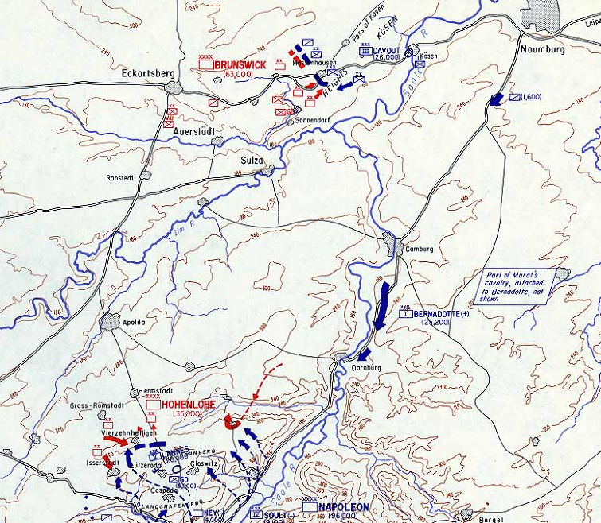
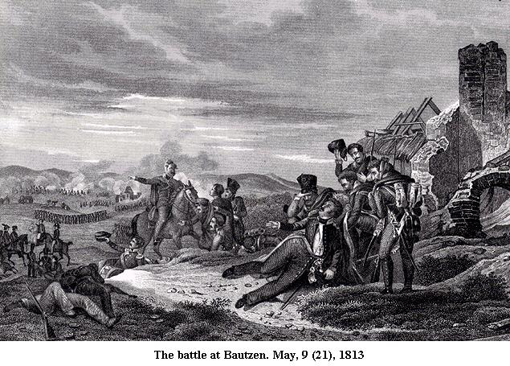
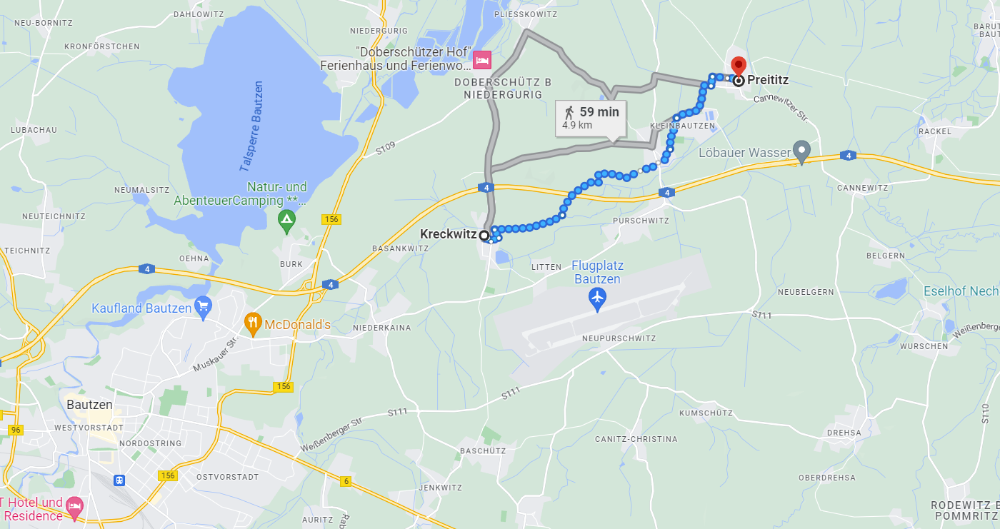
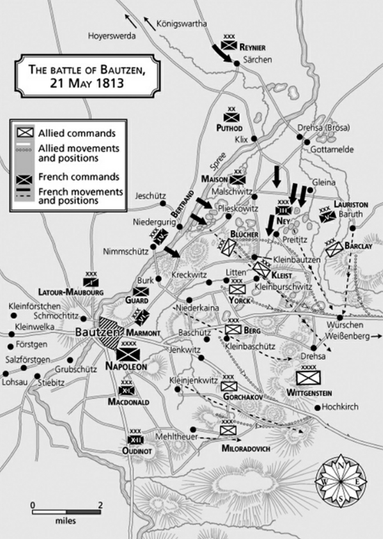

바우첸 전투 (5) - 1806년 아우어슈테트의 여파
게시: 2023-05-08T06:30:45+09:00
오전 10시에 글레이나 언덕에서 나폴레옹의 명령서를 손에 쥔 네에게는 당장 2만3천의 병력이 있었고, 바로 뒤에 약 2만의 추가 병력 4개 사단이 따라오고 있었습니다. 네가 해야 할 일이라고는 글레이나에서 프라이티츠까지의 1시간도 안 걸릴 거리를 그냥 걸어서 가면 되는 것이었습니다. 이후에 벌어진 어이 없는 상황 전개에 대해 누군가는 책임을 져야 했는데, 바우첸 전투가 종료된 이후 평소부터 사이가 좋지 않았던 베르티에로부터 그 책임을 추궁당한 것은 바로 네의 참모인 조미니였습니다. 조미니는 이 일에 대해 나폴레옹의 명령서가 클릭스(Klix)를 통해 우회하여 오느라 너무 늦게 도착한데다 작전 상황이 너무 순조로와 네가 글레이나를 너무 빨리 점령했다는 앞뒤가 안 맞는 이상한 변명을 하기도 했습니다만, 확실히 너무 쉬운 임무를 손에 받아들고 나면 네 같은 노련한 군인에게는 딴 생각이 들기도 하나 봅니다. 네가 그렇게 유리한 전황을 이끌어 낼 수 있었던 것은 그날 새벽 나폴레옹으로부터 아무런 명령서를 받지 못한 상태에서도 네가 스스로의 판단으로 남쪽으로의 공격을 시작했기 때문이었습니다. 나폴레옹 전쟁 초반, 경직된 조직 문화를 가진 오스트리아군이나 프로이센군과는 달리 개별 지휘관들이 스스로의 판단에 의해 능동적인 작전을 수행했던 것이 나폴레옹의 성공 이유이기도 했습니다. 그런데 그런 성향이 5월 21일 아침 11시, 뜻밖의 문제를 일으키고 맙니다. 네는 단순히 명령을 상명하달하는 교환수 같은 장군이 아니었습니다. 그는 글레이나 언덕에 오른 김에 당연히 망원경으로 전장을 살폈는데, 그의 눈에 들어온 것은 당장 30분만 강행군하면 충분히 닿을 수 있는 남쪽의 목표물 프라이티츠 마을에는 별다른 적군이 없다는 것이었습니다. 반면에 남서쪽의 크렉비츠 언덕에는 꽤 큰 규모의 적군이 웅크리고 있는 것이 보였습니다. 바로 블뤼허의 사령부였습니다. 네는 노련한 군인답게 크렉비츠 언덕의 병력이 연합군 우익의 주력 부대라고 정확하게 파악했고, 그는 프라이티츠가 아닌 크렉비츠 언덕을 공격하기로 결심합니다. 그렇다고 나폴레옹의 지시를 묵살한 것은 아니었습니다. 그 순간 총 3개 사단을 가지고 있던 그는 프라이티츠 점령에는 1개 사단이면 충분하다고 보고 뤼첸 전투 때부터 격전의 주인공이었던 수암(Souham) 장군의 사단을 프라이티츠로 파견했습니다. 그런데 크렉비츠 언덕의 프로이센군도 결코 적은 수는 아니었습니다. 남은 2개 사단 1만 5천 정도로는 공격이 용이하지 않다고 본 네는 현명하게도 만용을 부리지 않고 후방에서 따라오는 4개 사단이 도착하여 충분한 수적 우세를 가진 뒤에 크렉비츠 공격을 시작하기로 했습니다. 그래서 그는 움직이지 않고 기다렸습니다. 여기까지의 상황에서 무엇이 잘못되었을까요? 어떻게 보면 모든 결정이 다 합리적인 수준으로 보입니다. 10시 경 네의 손에 들어온 나폴레옹의 명령서는 틀림없이 해가 뜨기 전에 씌여진 것이었을 것입니다. 나폴레옹이 아무리 군사적 천재라고 하더라도 나폴레옹의 판단은 몇 시간 이전의 상황에 근거한 것이고, 특히 글레이나 언덕에서 적진 뒤편을 직접 눈으로 보고 내린 결정도 아니었습니다. 그에 비해 네는 바로 눈 앞에 펼쳐진 현재의 상황에 근거하여 저런 결정을 내렸습니다. 전투에서는 1시간이 아니라 30분 사이에도 모든 것이 결정되어 버릴 수 있는 법인데, 아무 적군이 없는 프라이티츠 마을로 천천히 행군이나 하면서 1시간을 낭비하는 것은 네가 보기에는 오히려 배임행위에 해당했습니다.
실제로 1806년 아우어슈테트 전투에서 저 뒤에서 들리는 격렬한 포성 소리를 무시하고 나폴레옹의 명령서대로 행군했던 베르나도트가 전투 종료 이후 나폴레옹에게서 엄청난 질책을 당했다는 것을 잘 기억하는 네로서는 그런 결정이 매우 합리적인 것이었습니다. 아우어슈테트 전투에서의 베르나도트의 행동에 대해 나폴레옹이 거세게 질책했던 것은 사실 나폴레옹이 자신의 착오를 평소 미운 털이 박혔던 베르나도트에게 부당하게 뒤집어 씌운 측면이 강했는데, 아마 나폴레옹은 그 여파가 1813년 바우첸에서 네의 행동으로 드러날 것이라고는 상상하지 못했을 것입니다. 이렇게 공정한 인사 평가가 정말 중요한 것입니다.

(1806년 10월 14일 아우어슈테트 전투 상황도입니다. 지도 약간 오른쪽 중단에 남쪽을 향하는 베르나도트의 제1 군단이 보입니다. 당시 다부의 제3 군단은 2배에 달하는 프로이센군과 맞닥뜨려 불리한 전투를 치루고 있었는데, 바로 인근에서 베르나도트의 제1 군단은 오히려 아우어슈테트 전투의 포성을 무시하고 남쪽의 예나 전투를 향해 행군했습니다. 이는 나폴레옹이 명시적으로 '베르나도트가 이미 도른부르크에 도착한 상태라서 예나 전투에서 란을 지원해줄 위치였으면 좋겠다'라고 쓴 명령서를 보내왔기 때문이었습니다. 이후의 나폴레옹의 질책에 대해서 베르나도트는 '명령에 따랐을 뿐'이라고 매우 억울하게 여겼습니다.) 아무튼 프라이티츠에는 수암 장군의 1개 사단만 진군하여 무혈 점령했습니다. 그러자마자 이들은 퇴로가 끊길까 화들짝 놀란 블뤼허가 보낸 프로이센군을 맞이하여 격렬한 전투를 벌이게 되었습니다. 처음에는 쳐들어온 뢰더의 근위 연대를 수암 사단이 어렵지 않게 밀어낼 수 있었으나, 사태가 엄중한 것을 본 블뤼허가 보내온 추가 병력에 의해 오후 1시경 결국 수암 사단은 전체 병력의 절반 정도를 사상자와 포로로 잃고 프라이티츠에서 밀려났습니다.

(수암 사단을 몰아내고 프라이티츠를 탈환하는데 일조한 프로이센의 정예 보병 연대인 콜베르크(Kolberg) 연대의 당일날 모습입니다. 쓰러진 사람은 누군인지 묘사된 기록은 찾을 수 없네요.) 그런데도 네는 움직이지 않았습니다. 그의 시선은 프라이티츠가 아니라 크렉비츠의 프로이센군 진지에 고정되어 있었는데, 프라이티츠에서 격렬한 전투가 벌어지는데도 크렉비츠의 프로이센군이 흔들리지 않고 의연하게 자리를 지키는 것을 보고는 그 병력 수를 과대평가하게 되었습니다. 결국 네는 더 많은 병력을 가지고 있었음에도, 서쪽에서 나폴레옹 본진의 프랑스군이 크렉비츠 언덕에 공격을 시작할 때까지 기다리기로 했습니다. 나폴레옹의 명령대로 네의 3개 사단 2만 병력이 프라이티츠를 점령하여 프로이센군의 퇴로를 끊었다면, 결국 블뤼허도 단단한 방어진지가 구축된 유리한 고지인 크렉비츠에서 내려와 남동쪽으로의 후퇴하든가 또는 프라이티츠 탈환을 위해 전투를 벌여야 했을 것입니다. 그랬다면 북서쪽에서 기회만 엿보던 술트와 남서쪽의 마르몽이 뒤를 쫓아 프라이티츠 서쪽에서 블뤼허의 프로이센군을 완전히 궤멸시킬 수 있었을 것입니다.

(크렉비츠에서 프라이티츠까지의 거리는 불과 4~5km 정도였습니다.) 이렇게 프라이티츠에서 사달이 벌어지는 동안, 다른 전선 모든 곳에서의 전황은 나폴레옹의 생각대로 착착 돌아갔습니다. 남쪽의 연합군 좌익에서는 우디노의 제12 군단이 리스췐(Rieschen)을 점령하며 기세를 올렸으나, 그 쪽이 나폴레옹의 주공 방향이라고 확신하고 있던 알렉산드르가 모든 지원 병력을 그 쪽에 집중시켰으므로 우디노는 곧 점령했던 곳을 포기하고 뒤로 밀려나야 했습니다. 그러나 우디노의 뒤를 쫓는 밀로라도비치를 견제하기 위해 북쪽의 막도날의 제11 군단이 엔크비츠(Jenkwitz) 일대에서 맹렬한 포격을 퍼부으며 남동쪽으로 진격했기 때문에 러시아군도 그 뒤를 쫓지 못했습니다. 결국 오후 1시 경부터는 우디노와 막도날은 러시아군과 대치 상황에 들어갔고 딱히 더 이상 눈에 띄는 진격이나 후퇴를 하지 않았는데, 이는 나폴레옹이 원하는 바였습니다. 그러는 동안 비트겐슈타인은 사령부로 속속 날아드는 북쪽 전선의 보고를 접하고는 '나폴레옹이 노리는 곳은 여기 좌익이 아니라 북쪽의 우익'이라고 목소리를 높였으나, 그의 부관 오브라이(Auvray) 장군을 제외하고는 어느 누구도 감히 짜르의 판단에 맞서 비트겐슈타인의 편을 들지 못했습니다.

(바우첸 전투의 5월 21일 상황입니다. 저 남쪽에서 우디노가 밀고 들어가는 모습이 보입니다. 곧 강력한 러시아군에게 밀려 후퇴해야 했지만, 그로써 우디노는 맡은 역할을 충실히 다 해낸 것이지요.) 하지만 북쪽에서는 네가 우물쭈물거리는 동안에도 기회가 계속 만들어지고 있었습니다. 프라이티츠에서 격전이 벌어지는 것을 포성을 통해 파악한 나폴레옹은 마르몽의 제6 군단을 북동쪽으로 전진시켜 크렉비츠의 프로이센군을 압박했습니다. 크렉비츠의 프로이센군의 시선이 동쪽 프라이티츠와 남서쪽의 마르몽에게 쏠린 동안, 아직 슈프레 강을 건너지 못하고 있던 술트의 제4 군단은 오후 1시경 눈에 띄지 않던 여울목과 급조된 다리를 이용하여 재빨리 슈프레 강을 건너는데 성공했습니다. 오후3시 경이 되자, 네도 드디어 당도한 추가 사단들을 동원하여 공격을 개시, 프라이티츠로 다시 향했습니다. 이로써 크렉비츠의 블뤼허는 술트와 마르몽, 그리고 네의 3면 공격에 처하게 되었습니다. 네가 약 4시간을 날려먹은 것에도 불구하고 여전히 나폴레옹은 연합군 격멸이라는 목표를 달성할 수 있었을까요? Source : The Life of Napoleon Bonaparte, by William Milligan Sloane Napoleon and the Struggle for Germany, by Leggiere, Michael V
https://mmbennetts.wordpress.com/2013/05/16/200-years-ago-the-battle-of-bautzen/